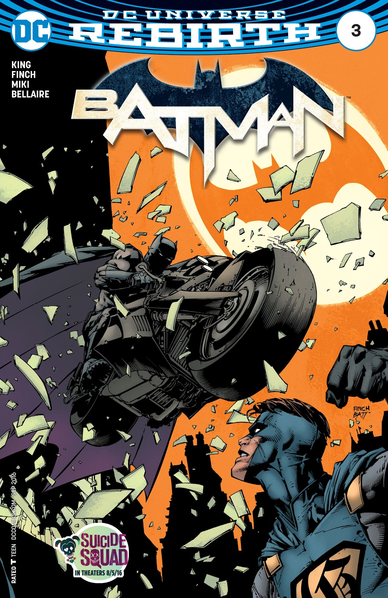

<!--
  Generated template for the BatmanPage page.

  See http://ionicframework.com/docs/components/#navigation for more info on
  Ionic pages and navigation.
-->
<ion-header>

  <ion-navbar>
    <ion-title>Batman</ion-title>
  </ion-navbar>

</ion-header>


<ion-content padding id="content">
  <h2 id="title">Batman</h2>
  <div id="imageBatman">
    </div>


    <button ion-button id="btnBack" (click)="Back()">Back</button>
    <button ion-button id="btnNext" (click)="Next()">Next</button>
 

</ion-content>